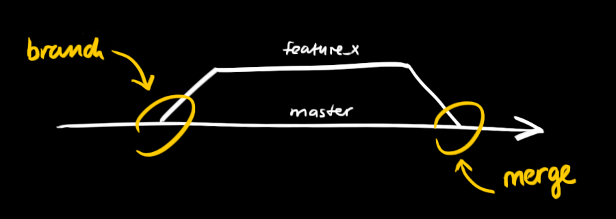

git - 簡単ガイド
猫でもわかるGit 最初の一歩
Tweet
新規のリポジトリを作成するには
新しいフォルダを作って開きます。そして、
git init
を実行します。
ローカルのリポジトリをクローンするには
git clone /path/to/repository
そして、リモートのリポジトリをクローンするには
git clone username@host:/path/to/repository
を実行します。
ローカルのリポジトリはGitが管理する三本の"木"からなっています。
第一はファイルそのものがある Working Directory、
第二は中間的な位置にあるIndex、そして
第三は最後のコミットを指すHEAD、
この三本です。
変更されたファイルを選択します。
git add <filename>
git add *
を実行するとIndexに追加されます。
これは基本的な作業の一つです。
変更を実際に適用するには
git commit -m "Commit message"
を実行します。
変更がHEADに入りましたが、
リモートリポジトリには未だ入っていません。
この時点で、変更がローカルリポジトリのHEADに適用されました。この変更をリモートリポジトリに適用するには
git push origin master
を実行し、masterの代わりに適用のブランチ名を入れます。
もし既存リポジトリをクローンせずに使用した場合
git remote add origin <server>
を実行すると、リモートリポジトリを登録する事が可能です。
これで変更を特定なリモートリポジトリに送る(push)事ができます。
ブランチは関連性のない機能を実装するときに使用されるもので、リポジトリを作成する際にデフォルトのブランチはmasterです。ブランチを作って使用を終えたらメインのブランチに戻すようにしましょう。

"feature_x"という名前のブランチを作って スイッチします
git checkout -b feature_x
メインのブランチに戻る
git checkout master
ブランチの削除
git branch -d feature_x
ブランチをリモートリポジトリにプッシュしない限りブランチは他人には見れないようになっていますのでご注意ください。
git push origin <branch>
自分のリポジトリを最新のコミットにアップデートするには
git pull
を作業のフォルダで実行するとリモートリポジトリの
最新情報を取得し(fetch)現在の状態とマージ(merge)されます。
或るブランチを現在の物(master等)にマージするには次の様にします。
git merge <branch>
両者とも自動的にGitはマージをしようとしますが、
必ず成功する訳ではなく結果的に競合(conflict)が発生します。
手動でファイルの編集等をする事によって
競合を解決しマージしなければなりません。
ファイルの変更後、下記の様にマージされたとしてマークします。
git add <filename>
マージする前に差分を見る事もできます。
git diff <source_branch> <target_branch>
SVNでも使用されている概念ですが、バージョンを
リリースする度にタグを作る事が推奨されています。
新規のタグ1.0.0を作成するには下記を実行します。
git tag 1.0.0 1b2e1d63ff
尚、1b2e1d63ff はタグが指すコミットIDの10文字です。
コミットIDを見るにはlogを出します。
git log
コミットIDは最後まで書かなくても構いませんが
唯一の値でなければいけません。
うっかり間違ってしまったとき、ローカルの変更を
次のコマンドで取り消す事ができます。
git checkout -- <filename>
これはHEADの最後のコミットの状態にファイルを戻します。
Indexに追加された変更や新しいファイルは除きます。
一方、全ての変更とローカルコミットを捨てる場合、サーバーから最新情報を取得し、masterブランチがそこを指す様にする事ができます。
git fetch origin
git reset --hard origin/master
Gitの内装GUI
gitk
コンソール上でアウトプットにカラーを付加
git config color.ui true
logでコミット一つに対し一行のみを表示
git config format.pretty oneline
インタラクティブ方式でファイルを追加
git add -i

コメント